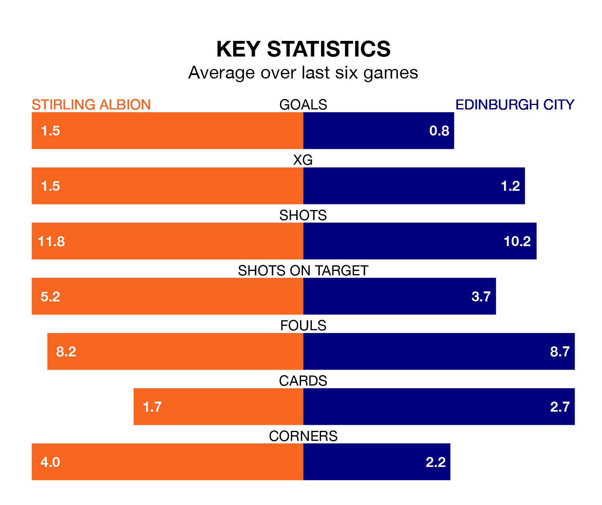

Saturday's match at the Forthbank Stadium sees two relegation candidates play each other, as eighth-ranked Stirling Albion host bottom of the table Edinburgh City.
Stirling have picked up 26 points from their first 26 League One games, with seven wins and five draws.
That is 15 points more than Edinburgh have collected, having won two and drawn five.
Stirling are in mixed form in League One, with two wins and a draw from their last six games.
With no wins and two draws over that period, Edinburgh's form is worse – they have taken two points from 18, compared to Albion's seven.
In Blair Currie, the Binos can rely on one of the league's safest pair of hands. He has kept six clean sheets in his 24 appearances this season, and only one other 'keeper – Falkirk's Sam Long – has been able to prevent the opposition scoring on more occasions in League One.
In City's net, Andrew McNeil has one clean sheet in nine games. He has conceded a goal every 34 minutes, 70% more often than the 58 minutes between goals for Currie.
In the last 10 years, Stirling and Edinburgh have played each other on 24 occasions. Stirling won 10 of them, Edinburgh nine, and they drew five times.
On average, the Binos scored 1.2 goals and Edinburgh 1.0 in those matches.
Their last meeting was on December 9, when Stirling won 3-1 away.
With 24 goals in 24 games so far this season, the hosts are the league's lowest scorers with 1.0 goals per game. And they are conceding at an average rate, letting in 39 goals at a rate of 1.6 per game.
The away team are also below average scorers, with 1.2 goals per game, compared to a league average of 1.6. They have conceded 2.8 goals per game.
Stirling's last match was on February 17, a 2-1 loss against Annan Athletic, with Kieran Offord getting the goal for the Binos.
Edinburgh drew 1-1 with Queen of the South last time out, also on February 17, with Ruairidh Adams on the scoresheet.
Updated: 12:18 (UTC), 19/02/24